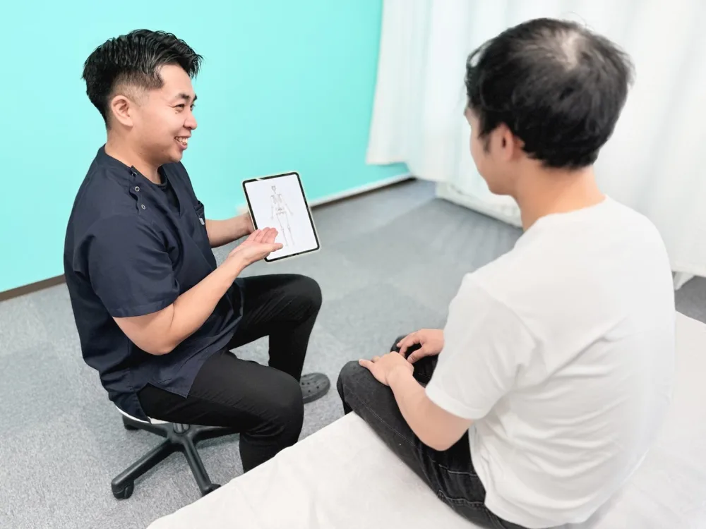

交通事故の通院ガイド
交通事故治療は病院との併用・転院ができます
「今の通院先で本当にいいのかな…」——実はどこで治療を受けるかを選ぶ権利は、患者さんご本人にあります。病院と接骨院の併用も、通院先の変更（転院）も可能です。知っているだけで、回復のスピードも通院のストレスも大きく変わります。
自賠責で窓口0円
交通事故は夜20時まで受付
祝日も通常営業
「今の通院先で本当にいいのかな…」——実はどこで治療を受けるかを選ぶ権利は、患者さんご本人にあります。病院と接骨院の併用も、通院先の変更（転院）も可能です。知っているだけで、回復のスピードも通院のストレスも大きく変わります。
思い当たる項目があれば、通院先を見直すタイミングです。
「転院ってなんだか大ごとになりそう…」の段階で大丈夫です。交通事故治療専門アドバイザーが、あなたの状況でいま何をすればいいかを無料でご案内します。保険会社への伝え方まで丁寧にサポートするので、面倒な手続きはほとんどありません。
むちうちなどの事故のケガは、良くなるまで数週間〜数ヶ月の通院がつきもの。見極めの軸は「通いやすさ」と「治療との相性」です。
回復のカギは施術の間隔を空けないこと。ところが職場や自宅から遠い、待ち時間が読めない、受付が早く閉まる——こうした院では通院がどうしても飛び飛びになります。通院が途切れると体の戻りが遅れるだけでなく、保険会社側から「もう治ったのでは」と受け取られて補償が早く打ち切られる一因にもなります。生活動線の中で続けられる院かどうか、最初に確認しましょう。
事故の衝撃は、筋肉や靭帯に日常生活ではありえないダメージを残します。投薬や経過観察だけで変化が感じられないなら、傷んだ組織へ直接働きかける手技や物理療法を組み合わせる段階かもしれません。「説明に納得できるか」「回復のゴールを示してくれるか」も相性の大事な物差しです。合っていないと感じたまま通い続ける必要はありません。

「病院に通いながら接骨院にも通う」（併用）も、「通院先を変える」（転院）も、どちらも可能です。むしろ検査・診断書は病院、継続的な体のケアは接骨院、と役割分担する通い方が、回復にも補償にも有利な王道パターンです。
「いま通っている病院にダメと言われた」「保険会社に接骨院は必要ないと言われた」というご相談をよくいただきますが、どこで治療を受けるかを決める権利は患者さんご本人にあります。あきらめる必要はまったくありません。当院では対応に困ったときのために交通事故に強い提携弁護士のご紹介体制も整えています。
接骨院に通う場合も、医師の診断と定期的な経過観察はとても大切です。当院は「病院に行かなくていい」という考えではなく、病院と二人三脚で回復を目指すスタイル。検査が必要な状態であれば、提携医療機関への紹介状を作成してご案内します。
「手続きが大変そう」と思われがちですが、実際にやることはほとんどありません。
LINEまたはお電話で「いま○○に通っているが、併用（転院）したい」とお伝えください。あなたの状況に合わせて、ベストな進め方をご案内します。
「今後はBTG接骨院 小牧院にも通います」と担当者に伝えるだけ。これで手続きは基本的に完了です。伝え方が不安な場合は、当院が言い方まで丁寧にサポートします。
自賠責保険適用で窓口負担0円のまま通えます。交通事故の方は夜20時まで受付・祝日も通常営業なので、お仕事帰りでも無理なく続けられます。
減りません。慰謝料は通院実績にもとづいて計算され、接骨院への通院日数もきちんとカウントされます。むしろ通いやすい院に変えて通院の間隔が空かなくなることで、適正な補償につながるケースが多いです。
病院に直接言う必要はありません。手続き上は保険会社への連絡だけで完結します。経過観察などで今後も病院に通う場合も、「接骨院と併用します」と伝えるだけで大丈夫です。
通院先を選ぶ権利は患者さんにあり、保険会社が一方的に決めることはできません。言われた内容をそのままお聞かせください。当院の交通事故治療専門アドバイザーが対応方法をご案内し、必要なら交通事故に強い提携弁護士におつなぎします。
お早めにご相談ください。症状が残っているのに治療を終了する必要はありません。状況を伺ったうえで、継続通院の進め方や、必要に応じて弁護士への相談までご案内します。
できます。手続きは同じで、保険会社への連絡のみです。「今の施術が合っていない気がする」という段階でも、まずはお気軽にご相談ください。

体のケアも、転院の手続きも、保険会社への対応も。
BTG接骨院 小牧院がワンストップでサポートします。